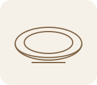
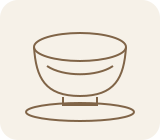
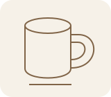

입문
작은 접시 빚기
손으로 흙을 눌러 작은 접시 두 장을 만듭니다.
42,000원1인 기준

과정 참고 사진 · 실제 수업 기록 아님
수업 선택
기법과 만들 물건을 비교해 보세요. 그림은 형태를 설명하는 예시입니다.
검색어나 분류를 바꿔 다시 살펴보세요.

손으로 흙을 눌러 작은 접시 두 장을 만듭니다.

흙의 중심을 잡고 작은 그릇의 형태를 세웁니다.

손에 맞는 컵과 손잡이를 함께 빚습니다.